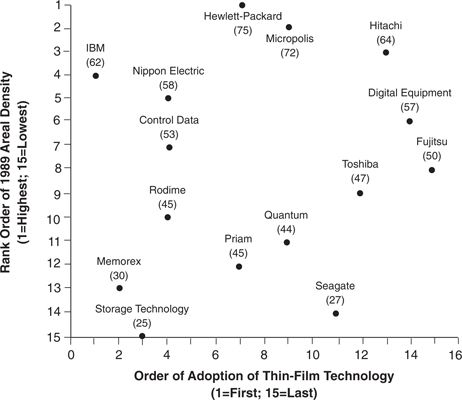
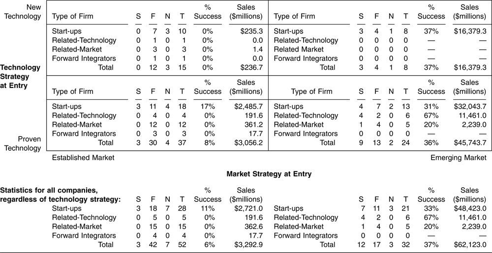

In contrast to the evidence that leadership in sustaining technologies has historically conferred little advantage on the pioneering disk drive firms, there is strong evidence that leadership in disruptive technology has been very important. The companies that entered the new value networks enabled by disruptive generations of disk drives within the first two years after those drives appeared were six times more likely to succeed than those that entered later.
Eighty-three companies entered the U.S. disk drive industry between 1976 and 1993. Thirty-five of these were diversified concerns, such as Memorex, Ampex, 3M, and Xerox, that made other computer peripheral equipment or other magnetic recording products. Forty-eight were independent startup companies, many being financed by venture capital and headed by people who previously had worked for other firms in the industry. These numbers represent the complete census of all firms that ever were incorporated and/or were known to have announced the design of a hard drive, whether or not they actually sold any. It is not a statistical sample of firms that might be biased in favor or against any type of firm.
Figure 6.2 Relationship between Order of Adoption of Thin-Film Technology and Areal Density of Highest-Performance 1989 Model

Source: Clayton M. Christensen, “Exploring the Limits of the Technology S-Curve. Part I: Component Technologies,” Production and Operations Management 1, no. 4 (Fall 1992): 347. Reprinted by permission.
The entry strategies employed by each of these firms can be characterized along the two axes in Table 6.1. The vertical axis describes technology strategies, with firms at the bottom using only proven technologies in their initial products and those at the top using one or more new component technologies. 3 The horizontal axis charts market strategies, with firms at the left having entered already established value networks and those at the right having entered emerging value networks. 4 Another way to characterize this matrix is to note that companies that were agressive at entry in developing and adopting sustaining innovations appear in the two top boxes, left and right, while companies that led at entry in creating new value networks appear in the two right-hand boxes, top and bottom. The companies in the right boxes include all companies that attempted to create new value networks, even those networks that did not materialize into substantial markets (such as removable hard drives).
Table 6.1 Disk Drive Companies Achieving $100 Million in Annual Revenues in at Least One Year Between 1976 and 1994

Source: Data are from various issues of Disk/Trend Report.
Note: S indicates success, F indicates failure, N indicates no, T indicates total.
Each quadrant displays the number of companies that entered using the strategy represented. Under the S (for “success”) are the number of firms that successfully generated $100 million in revenues in at least one year, even if the firm subsequently failed; F (for “failure”) shows the number of firms that failed ever to reach the $100 million revenue threshold and that have subsequently exited the industry; N (for “no”) indicates the number of firms for which there is as yet no verdict because, while still operating in 1994, they had not yet reached $100 million in sales; and T (for “total”) lists the total number of firms that entered in each category. 5 The column labeled “% Success” indicates the percentage of the total number of firms that reached $100 million in sales. Finally, beneath the matrix are the sums of the data in the two quadrants above.
The numbers beneath the matrix show that only three of the fifty-one firms (6 percent) that entered established markets ever reached the $100 million revenue benchmark. In contrast, 37 percent of the firms that led in disruptive technological innovation—those entering markets that were less than two years old—surpassed the $100 million level, as shown on the right side of Table 6.1. Whether a firm was a start-up or a diversified firm had little impact on its success rate. What mattered appears not to have been its organizational form, but whether it was a leader in introducing disruptive products and creating the markets in which they were sold. 6
Only 13 percent of the firms that entered attempting to lead in sustaining component technologies (the top half of the matrix) succeeded, while 20 percent of the firms that followed were successful. Clearly, the lower-right quadrant offered the most fertile ground for success.
The cumulative sales numbers in the right-most columns in each quadrant show the total, cumulative revenues logged by all firms pursuing each of the strategies; these are summarized below the matrix. The result is quite stunning. The firms that led in launching disruptive products together logged a cumulative total of $62 billion dollars in revenues between 1976 and 1994. 7 Those that followed into the markets later, after those markets had become established, logged only $3.3 billion in total revenue. It is, indeed, an innovator’s dilemma. Firms that sought growth by entering small, emerging markets logged twenty times the revenues of the firms pursuing growth in larger markets. The difference in revenues per firm is even more striking: The firms that followed late into the markets enabled by disruptive technology, on the left half of the matrix, generated an average cumulative total of $64.5 million per firm. The average company that led in disruptive technology generated $1.9 billion in revenues. The firms on the left side seem to have made a sour bargain. They exchanged a market risk, the risk that an emerging market for the disruptive technology might not develop after all, for a competitive risk, the risk of entering markets against entrenched competition. 8